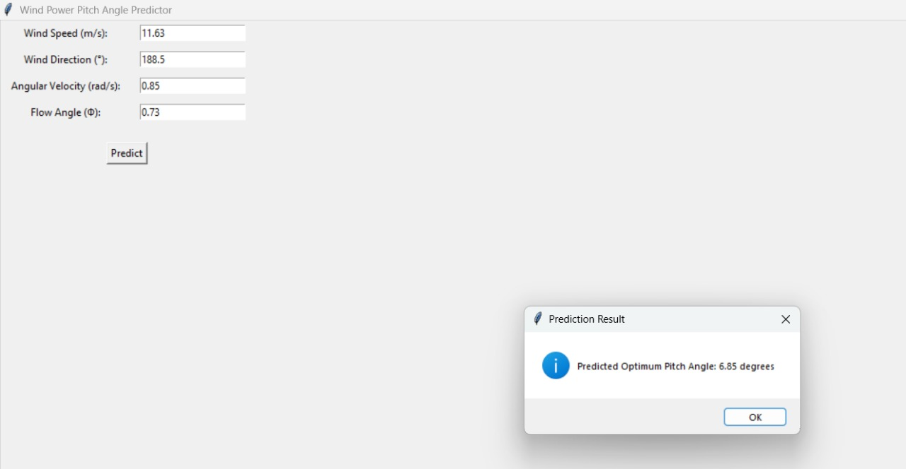
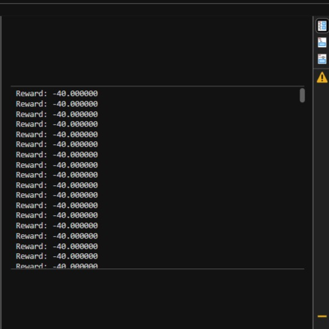
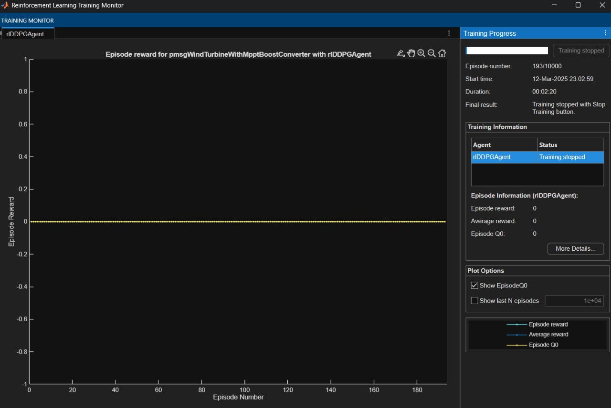

Yaw Angle Optimization using Machine Learning & Reinforcement Learning
ML-Based Approach (Artificial Neural Network - ANN)
- Uses ANN to predict the optimal yaw angle based on wind speed, wind direction, angular velocity, and flow angle.
- Dataset is normalized using MinMaxScaler.
- ANN consists of multiple layers with ReLU activation and dropout layers to prevent overfitting.
- Model is trained using the Adam optimizer and Mean Squared Error (MSE) loss function.
- Evaluation is performed using R² score and Mean Absolute Error (MAE).

RL-Based Approach (Deep Reinforcement Learning - DDPG)
- Uses a Deep Deterministic Policy Gradient (DDPG) model.
- Actor-Critic architecture: Actor predicts optimal yaw angle, and Critic evaluates the decision.
- Custom Simulink environment is created with wind speed, rotor speed, and generated power as variables.
- Uses Experience Replay Buffer and exploration noise for better learning.
- Training is performed for 10,000 episodes until an optimal policy is learned.

RL-TRAINING PLOT
